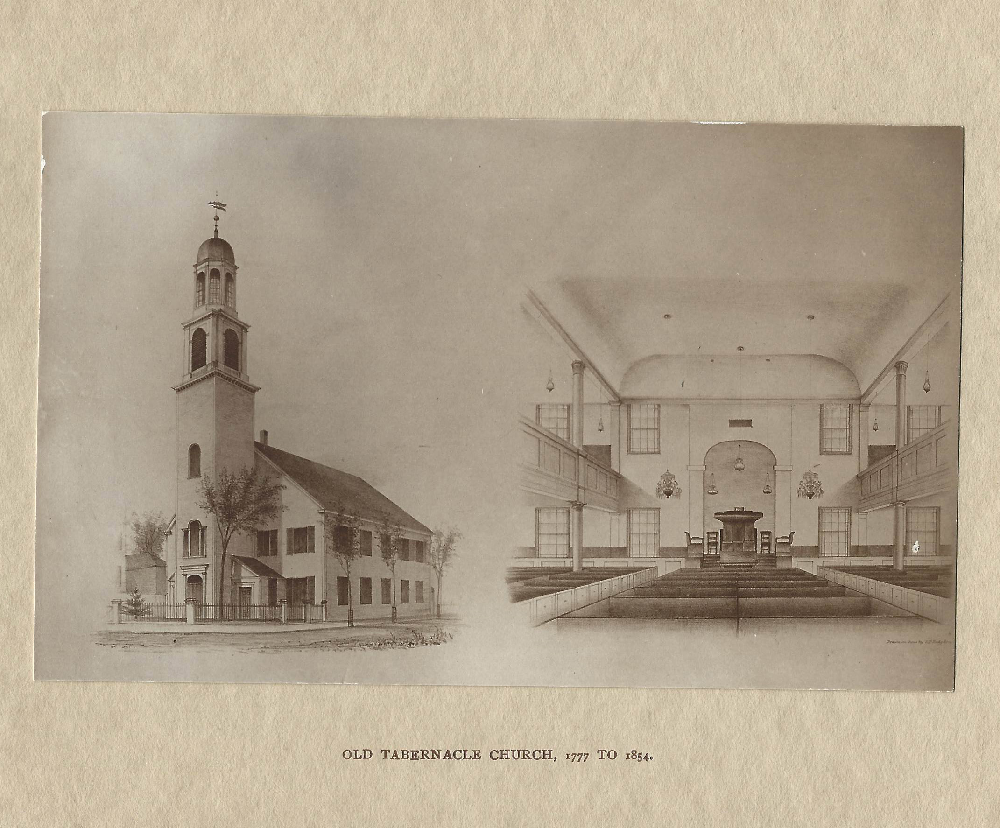
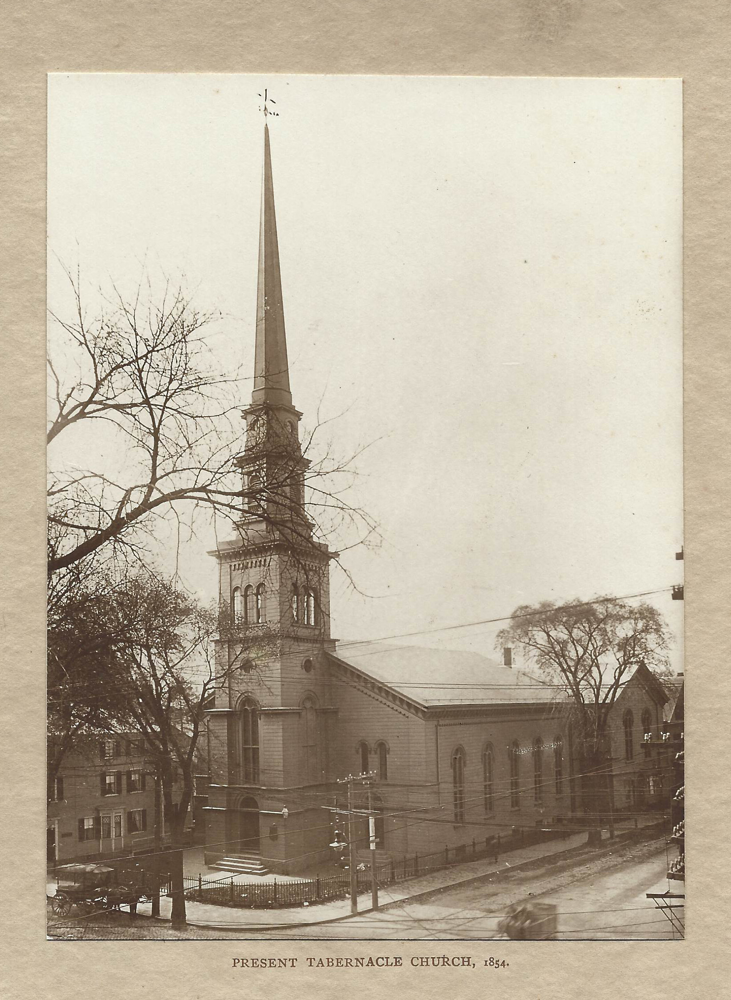

In those days the First Church in Salem was located a few blocks away, on the site of what is now the Daniel Low building. Fire burned the first wooden building, and over the years the congregation of First Church divided, forming a Second as Salem expanded, and then a Third church, as styles of worship became varied. A majority of the church built a new building nearby and occupied it, and for a while both churches were called First Church in Salem, until the colonial legislature, in 1762, required the group that had separated to give up that name. They then took the name Third Church of Christ in Salem. In the great Salem fire of 1774, their church was burned down.

The new church they built in 1777, was a copy of London’s Tabernacle, made famous by preacher George Whitefield, a frequent visitor to the North Shore. ‘The Tabernacle’ became the nickname of Third Congregational, and over time replaced the name Third Congregational. Our present building, built in 1924, is a replica of this earlier Tabernacle.
